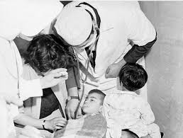

En el año de 1967, el 25 de noviembre se prensencio una de las mayores tragedias ocurridas en el departamento de Boyacá. En el que entonces el ultimo sabado de noviembre la ciudad se preparaba para la clausura de los panteles educativos, pero de un momento a otro todo se convirtio en caos, confunsion y muerte. Como la rutina normal de muchos Chiquinquireños, fueron por la mañana temprano a comprar el pan a la panaderia Nutibara que le pertenecia a Aurelio Fajardo Avéralo donde preparaban los mejores amasijos.

Ese mismo dia muchas escuelas clausuraban sus estudios por la mañana, como tambien ya lo habian hecho
otras un dia antes. El dia habia comenzado con normalidad, algunas
familias desayunaban juntas para luego salir a realizar sus quehaceres. Sin embargo, a los
pocos minutos varios niños se quejaban de fuertes dolores cabeza, vomitos, desmayos y falta
de oxigeno.
De un momento a otro el caos estallo, pues varios padres tomaron a su hijos y empezaron a correr
al hospital San Salvador. Las calles estallaron en confunsion y la histeria se apodero a la entrada del
hospital ya que alguños niños se estaban muriendo.
Los quejidos de los niños agonizantes, el llanto de las madres angustiadas, la ofuscación de
las gentes que despavoridas no alcanzaban aún a medir la magnitud de la tragedia, hicieron
que Chiquinquirá viviera los momentos más dramáticos de toda su historia.
“No se sabe si es el agua, o es el aire los que están envenenados”, esa era la noticia que
se repetía una y otra vez en la emisora Reina de Colombia, único medio de comunicación de
esa localidad ubicada a una hora y media de Tunja, para referirse a la noticia de que se
estaba presentando una intoxicación masiva en la ciudad.
Los segundos, los minutos y las horas pasaban y la angustia se hacía cada vez más crítica
cuando ya se comenzó a recibir el reporte sobre los primeros muertos, cada uno de los
chiquinquireños tenía su propia hipótesis sobre las causas de la intoxicación, pero nadie
lograba siquiera sospechar lo que se vino a revelar hasta en horas de la tarde.
Algunos doctores relatan que caundo comenzo la emergencia habia muy poco personal, ya que aun
era temprano y que debido a la insertidubre no sabian que hacer, más el hecho que el hospital ya
daba a basto, ya que tanto en los pasillos, las escaleras, los pisos, el jardin, todo estaba
invadido de enfermos, muertos e intoxicados.
Hasta las 10:00 de la mañana se sabía que habían muerto más de 20 personas, y que más de 300
se hallaban en el hospital San Salvador, donde nueve médicos oriundos de la ciudad hacían lo
posible por atenderlos.
La cifra de muertos fue aumentando progresivamente, hasta alcanzar a medio día 38, la mayoría
niños y cerca de 50 personas se hallaban agonizantes. Después de medio día las autoridades
tanto civiles como eclesiásticas y militares se movilizaron en todas las formas para pedir
auxilios a Tunja y Bogotá, en dramáticos llamados.
Hubo casos de intenso dramatismo, en los que familias enteras que resultaron afectadas, perdieron
hasta cuatro o cinco de sus miembros. Los adultos, que inicialmente no dieron muestras de
intoxicación, fueron llegando más tarde a pedir auxilios y al atardecer algunos habían fallecido.
En horas de la tarde ya se había producido la llegada de delegados de la Secretaría de Salud de
Boyacá y del Ministerio. El propio ministro de Salud, Antonio Ordóñez Plata, llegó hasta la ciudad
Mariana en helicóptero, al igual que el Gobernador de ese entonces, Antonio Bayona Ortiz.
De la misma manera, hicieron su arribo varios científicos del Laboratorio de Toxicología de Bogotá
que durante varias horas estuvieron examinando muestras de agua y comida para determinar las causas
de la intoxicación. Sin embargo, fue Pedro Osorio, un ciudadano común y corriente, quien comprobó
que era el pan el que estaba produciendo el envenenamiento: le dio migas a unos pollos y los animales
murieron en unos pocos minutos. Arturo Díaz Avellaneda, a quien se le habían muerto en el transcurso
de la mañana cuatro de sus nietos, también hizo un angustiado experimento: le dio pan a su perro y
el animal cayó muerto a los pocos minutos.
Al anochecer de ese 25 de noviembre el balance era estremecedor: más de 500 personas se habían
intoxicado y hubo más de 2.000 que alcanzaron a ser afectadas. Se registraron 78 muertos, pero se
asegura que murieron más de 100, ya que algunos perecieron en hospitales y clínicas de Bogotá y otros
en sus propias casas.
El 30 de noviembre de 1967 en la Basílica se realizó un sepelio colectivo en medio del llanto y el dolor
de todos los pobladores. El Presidente de la República Carlos Lleras Restrepo acompañó el cortejo.
El folidol que nunca olvidan en la ciudad Mariana, Tres frascos de Folidol (insecticida que, aún existe, sirve especialmente para controlar las hormigas en los cultivos), que hacían parte de 32 cajas despachadas desde Bogotá con destino al almacén agropecuario Mi Granja, de propiedad de Luis Alberto Rodríguez, de Chiquinquirá, se rompieron al tomar una curva forzada el camión en que se transportaba la harina solicitada por la panadería Nutibara. El tóxico impregnó 10, de los 30 bultos que de ese artículo había adquirido el propietario de la panadería en los molinos Cundinamarca y La Concepción, en Bogotá.
Después de la tragedia, la panadería nunca se volvió a abrir. Por algunos meses el conductor del camión y el propietario de la panadería permanecieron detenidos, pero fueron dejados en libertad al no ser hallados culpables. En Chiquinquirá cuentan que el dueño del negocio murió años más tarde víctima de un accidente de tránsito; que en sus últimos días padeció de problemas mentales y nunca pudo olvidar el haber sido protagonista de la historia más dramática que ha vivido el pueblo chiquinquireño.
Derechos de autor © 2025